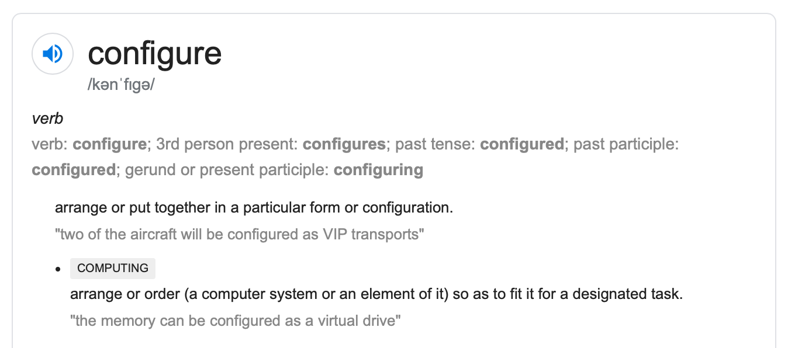

Stage 2 プログラムの土台を作る
2-1 ロガーを設定する
まずはお手元にコードをご用意ください。こちらにまとめてあります。
~~~~~~~~~~~~~~~
それではまず config.py というファイルに注目してください。ろくにプログラムっぽいことが書いてなくて

ほとんど値入れてるだけじゃん
となると思います。いや、それでいいんですよ。configure って英単語は「～を設定する」っていうような意味なんですから。
全体に関わるような、大事な大事な変数と定数の設定を全部ここでやっちゃおうということなんです。
ではコードをみていきましょう。
#! /usr/bin/env python3
# config.py
# programmed by Saito-Saito-Saito
# explained on https://Saito-Saito-Saito.github.io/chess
まずいちばん上の #! から始まるヤツは「シバン」と言います。どうやら OS によっては必要らしいです。
from logging import getLogger, StreamHandler, FileHandler, DEBUG, INFO, WARNING, ERROR, CRITICAL, Formatter
### LOGGER SETTNGS
DEFAULT_LOG_ADDRESS = 'log.txt'
DEFAULT_FORMAT = Formatter('%(asctime)s - %(levelname)s - logger:%(name)s - %(filename)s - L%(lineno)d - %(funcName)s - %(message)s')
def setLogger(name='default', *, level=INFO, fhandler=None, shandler=None, fhandler_level=DEBUG, shandler_level=CRITICAL, filemode='w', filename=DEFAULT_LOG_ADDRESS, fhandler_format=DEFAULT_FORMAT, shandler_format=DEFAULT_FORMAT):
logger = getLogger(name)
logger.setLevel(level)
fhandler = fhandler or FileHandler(filename, mode=filemode)
fhandler.setLevel(fhandler_level)
fhandler.setFormatter(fhandler_format)
logger.addHandler(fhandler)
shandler = shandler or StreamHandler()
shandler.setLevel(shandler_level)
shandler.setFormatter(shandler_format)
logger.addHandler(shandler)
return logger
その下、様々モジュールをインポートして、最初にするのがロガーの設定です。ロガーの設定ってやることは大したことないのに文の量が多くて、しかもそれを設定のたびに書かなければいけない。つまり
めんどくさい。
これこそプログラミングで解消すべき問題ですよね。ですから、ロガーを設定する関数というのを作ってしまいました。それが setLogger になります。
ここの説明は飛ばしても後々に影響を与えることはあまりありませんから、

全然ついていけねえ
となったらサッサと 2-2 にいくことをオススメします。まあデバッグ（バグチェック）は地獄になりますけど。
~~~~~~~~~~~~~~~
引数から順に見ていきましょう。
def setLogger(name='default', *, level=INFO, fhandler=None, shandler=None, fhandler_level=DEBUG, shandler_level=CRITICAL, filemode='w', filename=DEFAULT_LOG_ADDRESS, fhandler_format=DEFAULT_FORMAT, shandler_format=DEFAULT_FORMAT):
デフォルト引数ガンガンつかっていきますね。name はロガーの名前。基本的にここにはモジュール、つまりそのファイルの名前を入れていくつもりですが、入力がなかったときのために、また
別にロガー用意しちゃったんだよね
って場合のために、特に指定がなければ 'default' という名前を入れることにしています。
def setLogger(name='default', *, level=INFO, fhandler=None, shandler=None, fhandler_level=DEBUG, shandler_level=CRITICAL, filemode='w', filename=DEFAULT_LOG_ADDRESS, fhandler_format=DEFAULT_FORMAT, shandler_format=DEFAULT_FORMAT):
アスタリスク * 以降は全てキーワード引数になります。level はロガーが受け付ける最低のログレベル。これより低いものはそもそもロガーで処理されません。
def setLogger(name='default', *, level=INFO, fhandler=None, shandler=None, fhandler_level=DEBUG, shandler_level=CRITICAL, filemode='w', filename=DEFAULT_LOG_ADDRESS, fhandler_format=DEFAULT_FORMAT, shandler_format=DEFAULT_FORMAT):
その次がハンドラーです。既にあるハンドラーを入れたい場合は fhandler/shandler に入力してください。入力しなければ新設します。デフォルトが None となっている理由はすぐにわかります。
やべえ、何言ってるか全然わかんねえ
適宜マウスをわからない言葉の上に当てて備忘録を参照してください。最悪 2-2 に行っても大丈夫ですよ。
def setLogger(name='default', *, level=INFO, fhandler=None, shandler=None, fhandler_level=DEBUG, shandler_level=CRITICAL, filemode='w', filename=DEFAULT_LOG_ADDRESS, fhandler_format=DEFAULT_FORMAT, shandler_format=DEFAULT_FORMAT):
次にそれぞれのハンドラーが扱う最低レベルをそれぞれ引数にとります。
def setLogger(name='default', *, level=INFO, fhandler=None, shandler=None, fhandler_level=DEBUG, shandler_level=CRITICAL, filemode='w', filename=DEFAULT_LOG_ADDRESS, fhandler_format=DEFAULT_FORMAT, shandler_format=DEFAULT_FORMAT):
filemode はファイルハンドラーが
- テキストファイルをまっさらにして書き直す
- テキストファイルの続きに書いていく
など、どのモードで記入していくかを表します。ファイルハンドラーを設定する FileHandler の mode 引数にしたがってください。
def setLogger(name='default', *, level=INFO, fhandler=None, shandler=None, fhandler_level=DEBUG, shandler_level=CRITICAL, filemode='w', filename=DEFAULT_LOG_ADDRESS, fhandler_format=DEFAULT_FORMAT, shandler_format=DEFAULT_FORMAT):
filename はファイルハンドラーが記入するテキストファイルの名前。
def setLogger(name='default', *, level=INFO, fhandler=None, shandler=None, fhandler_level=DEBUG, shandler_level=CRITICAL, filemode='w', filename=DEFAULT_LOG_ADDRESS, fhandler_format=DEFAULT_FORMAT, shandler_format=DEFAULT_FORMAT):
最後に各ハンドラーのフォーマットを入れておしまいです。デフォルトは関数の直前で定義していますよ。
~~~~~~~~~~~~~~~
では関数の中身に移りましょうか。
logger = getLogger(name)
logger.setLevel(level)
まずは getLogger でロガーを取得します。引数にしたがって名前とを入れること。同時にロガーの最低レベル level を設定してしまいます。
fhandler = fhandler or FileHandler(filename, mode=filemode)
fhandler.setLevel(fhandler_level)
fhandler.setFormatter(fhandler_format)
logger.addHandler(fhandler)
次にファイルハンドラーですね。このブロックの最初の文では、
という仕組みで、この関数で扱うファイルハンドラーを宣言します。レベル、フォーマットを揃えたら、ロガーに加えておくことを忘れないでください。
全く同じようにストリームハンドラーも用意してロガーに搭載します。
shandler = shandler or StreamHandler()
shandler.setLevel(shandler_level)
shandler.setFormatter(shandler_format)
logger.addHandler(shandler)
return logger
最後、ロガーをリターンしておしまいです。だいぶ長く感じるとは思いますが、このおかげでデバッグ（バグチェック）がとてつもなく楽になります。ちょっとの辛抱です。